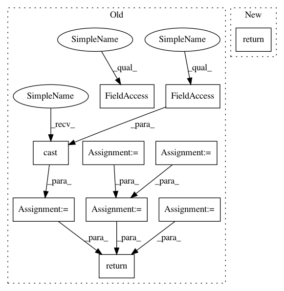

88b164b98c209ea8e2afbfae93a01b9aacd8b0ab,local_utils/data_utils.py,TextFeatureReader,read_features,#Any#Any#Any#Any#,206
Before Change
features = tf.parse_single_example(serialized_example,
features={
"images": tf.FixedLenFeature((), tf.string),
"imagenames": tf.FixedLenFeature([1], tf.string),
"labels": tf.VarLenFeature(tf.int64),
})
image = tf.decode_raw(features["images"], tf.uint8)
w, h = input_size
images = tf.reshape(image, [h, w, input_channels])
labels = features["labels"]
labels = tf.cast(labels, tf.int32)
imagenames = features["imagenames"]
return images, labels, imagenames
class TextFeatureIO(object):
After Change
filename_queue = tf.train.string_input_producer([tfrecords_path], num_epochs=num_epochs)
reader = tf.TFRecordReader()
_, serialized_example = reader.read(filename_queue)
return TextFeatureReader.extract_features(serialized_example, input_size, input_channels)
@staticmethod
def extract_features(serialized_sample, input_size: Tuple[int, int], input_channels: int) \
-> Tuple[tf.Tensor, tf.Tensor, tf.Tensor]:
In pattern: SUPERPATTERN
Frequency: 4
Non-data size: 10
Instances
Project Name: MaybeShewill-CV/CRNN_Tensorflow
Commit Name: 88b164b98c209ea8e2afbfae93a01b9aacd8b0ab
Time: 2018-09-28
Author: debenito@unternehmertum.de
File Name: local_utils/data_utils.py
Class Name: TextFeatureReader
Method Name: read_features
Project Name: MaybeShewill-CV/CRNN_Tensorflow
Commit Name: 88b164b98c209ea8e2afbfae93a01b9aacd8b0ab
Time: 2018-09-28
Author: debenito@unternehmertum.de
File Name: local_utils/data_utils.py
Class Name: TextFeatureReader
Method Name: read_features
Project Name: tensorflow/ranking
Commit Name: 6bf3f51cd0a312da842157665663c2dad9983248
Time: 2021-01-29
Author: xuanhui@google.com
File Name: tensorflow_ranking/python/losses_impl.py
Class Name: ClickEMLoss
Method Name: _compute_latent_prob
Project Name: thunlp/OpenKE
Commit Name: 0ab6621dcd3e9cd97a257ea2d8d05b23bfba8609
Time: 2020-04-08
Author: thu.hanxu13@gmail.com
File Name: openke/module/model/HolE.py
Class Name: HolE
Method Name: _ccorr
Project Name: GPflow/GPflow
Commit Name: bd1e9c04b48dd5ccca9619d5eaa2595a358bdb08
Time: 2020-01-31
Author: st--@users.noreply.github.com
File Name: gpflow/kernels/misc.py
Class Name: Coregion
Method Name: K